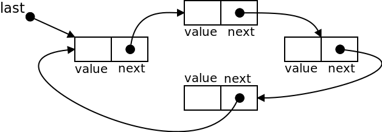
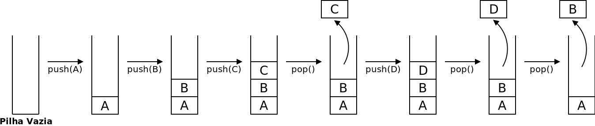
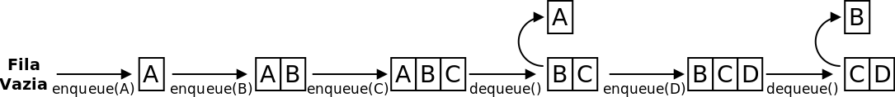

Contam para a nota dos exercícios das aulas e submetem-se no Mooshak até ao prazo. Para ter 100% nesta aula basta resolver os exercícios do guião principal. Se um colega te ajudou de forma direta, indica-o nos comentários do programa.
ED006 20 %ED194 20 %ED195 20 %ED196 20 %ED197 20 %ED005 20 %ED007 20 %ED029 20 %Nas teóricas falámos de mais tipos de listas ligadas, incluindo a noção de listas circulares, onde o último elemento "aponta" para o primeiro, de forma circular:

Verifique o seguinte código que implementa em Java um conjunto de operações sobre listas circulares
Exemplo de utilização
Compile o código e execute a classe TestCircularLinkedList para ver as listas circulares em funcionamento. Procure acompanhar cada uma das linhas de código e o seu efeito. Note em particular o que faz o método rotate() que "roda" os elementos, colocando o primeiro elemento no final da lista e avançando o segundo elemento para o início da fila.
Resolva o exercício [ED006] Pim, Pam, Pum e submeta também no Mooshak para testar a sua resolução.
nextLine() da classe Scanner e não se esqueça de "escapar" o resto da linha anterior).line.split(" ") devolve um array contendo as palavras e line.split(" ").length devolve a quantidade de elementos nesse array.rotate() o número de vezes necessário (o tamanho da frase menos um, porque já está no primeiro elemento da contagem) e remova o primeiro elemento (método removeFirst()). No final é só ver qual a criança que sobrou na lista circular (método getFirst()).Verifique o seguinte código que implementa em Java um conjunto de operações sobre listas duplamente ligadas
Exemplo de utilização
Compile o código e execute a classe TestDoublyLinkedList para ver as listas duplamente ligadas em funcionamento. Procure acompanhar cada uma das linhas de código e o seu efeito.
Um TAD Pilha é uma sequência de elementos LIFO (Last-In-First-Out) onde temos duas operações para modificar o conteúdo:
push(x)pop()
Verifique o seguinte código que implementa em Java um conjunto de operações sobre Pilhas
Interface
Exemplo de utilização
Implementação com listas ligadas
Implementação com arrays
Compile o código e execute a classe TestMyStack para ver a pilha em funcionamento.
Procure acompanhar cada uma das linhas de código e o seu efeito. Note em particular os métodos do TAD (basta ver o interface) e como criar a Pilha (a variável do tipo do interface atribuída a uma implementação desse mesmo interface).
Resolva o problema [ED194] Invertendo uma Pilha e poderá também submeter a sua solução no Mooshak.
Basta retirar n elementos da pilha (usando a operação pop) e depois voltar a inserir pela ordem correta (usando a operação push). À medida que vai retirando os elementos pode por exemplo guardá-los... num array.
Nota: se quiser testar o método pode optar por adicionar um main à sua classe ED194 (não será chamado no Mooshak) ou criar uma classe adicional no seu computador para fazer chamadas a ED194.
Resolva o problema [ED195] Expressões bem balanceadas e poderá também submeter a sua solução no Mooshak.
s.charAt(i) devolve o i-ésimo caracter da string s. Note que as posições válidas vão desde 0 até s.length()-1.MyStack<Character>) para ir guardando os parênteses de abertura: '(' e '['. Cada vez que apanhar um parênteses de fecho, verifique se corresponde ao tipo do último parênteses aberto (que está no topo da pilha).Uma pilha num array, como em ArrayStack: o topo é a última posição ocupada. Siga as operações e confirme o que devolve cada pop e top. No botão de algoritmo pode mudar para uma pilha numa lista ligada, como em LinkedListStack.
Pilha 3 8 (8 no topo). push(5) e push(1): 3 8 5 1. pop() devolve 1, top() devolve 5, depois saem 5 e 8. Fica 3.
Um TAD Fila é uma sequência de elementos FIFO (First-In-First-Out) onde temos duas operações para modificar o conteúdo:
enqueue(x)dequeue()
Verifique o seguinte código que implementa em Java um conjunto de operações sobre filas
Interface
Exemplo de utilização
Implementação com listas ligadas
Compile o código e execute a classe TestMyQueue para ver a Fila em funcionamento.
Procure acompanhar cada uma das linhas de código e o seu efeito. Note em particular os métodos do TAD (basta ver o interface) e como criar a Fila (a variável do tipo do interface atribuída a uma implementação desse mesmo interface).
Resolva o problema [ED196] Duas filas e poderá também submeter a sua solução no Mooshak.
Resolva o problema [ED197] União Ordenada e poderá também submeter a sua solução no Mooshak.
MyQueue<Integer> q = new LinkedListQueue<Integer>();)A LinkedListQueue guarda a fila numa lista ligada. Outra implementação comum usa um array circular: quando a cauda chega ao fim do array, volta à posição 0. Siga as operações numa fila de capacidade 4 e repare onde entra o 9.
Fila circular de capacidade 4 com 3 8 5. Sai 3, entram 1 e 9 (o 9 vai para a posição 0), 7 não cabe, sai 8. Fica 5 1 9.